Дисперсія та середнє квадратичне відхилений генеральної сукупності
Дисперсією генеральної сукупності називають середню квадратів відхилення варіант від середньої генеральної. Це дуже важлива міра розсіювання.
Дисперсія генеральної сукупності позначається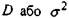і обчислюється за формулою
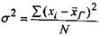 (6)
де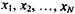 - індивідуальні спостереження генеральної сукупності;
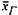 - середнє генеральне;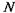 - об'єм генеральної сукупності. Середнє квадратичне відхилення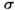обчислюють як
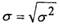 (7)
Зауважимо, що розглянуті формули відносяться до генеральної сукупності і тому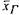не дорівнює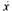 (вибірковому середньому). Крім того,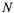- об'єм генеральної сукупності і не співпадає з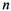- об'ємом
вибірки.
Середнє квадратичне відхилення, згідно формули (7), дорівнює кореню квадратному із дисперсії і є важливою числовою характеристикою міри розсіювання статистичних даних.
Приклад 2. Пан Н., менеджер інвестиційної компанії, займається фінансовим плануванням, яке допомагає його клієнтам сформувати персональні інвестиційні портфелі. Пан Н. зацікавився рівнем прибутковості двох різних корпорацій (фондів) за останні 5 років, які потребують інвестицій. Перша корпорація має рівень прибутковості інвестицій ш п'ятирічний період відповідно 12, 10, 13, 9 та 11 підситків, годі як друга - 13, 12, 14, 10 та 6 відсотків. Клієнт киянин зацікавленість до можливих варіантів інвестування. Якому варіанту інвестування віддасть перевагу пан Н.?
Розв'язання. Зауважимо, що середній рівень прибутковості обох корпорацій дорівнює 11% і тому необхідно оцінити надійність інвестицій або визначити міру ризику, який характеризується середньоквадратичним відхиленням. Пан Н. розрахував дисперсію та середньоквадратичне відхилення для кожного типу акцій. Для першої корпорації:
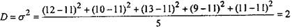
Середньоквадратичне відхилення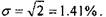 Для другої корпорації:
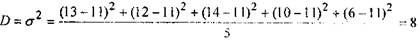
Середньоквадратичне відхилення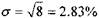
Інтерпретація. Так як перша корпорація проявляє ознаки меншої варіативності (мінливості) у поверненні вкладені, і пропонує той же рівень прибутковості, що й друга, то перша корпорація більш надійна і їй можна віддати перевагу для інвестиційних вкладень.